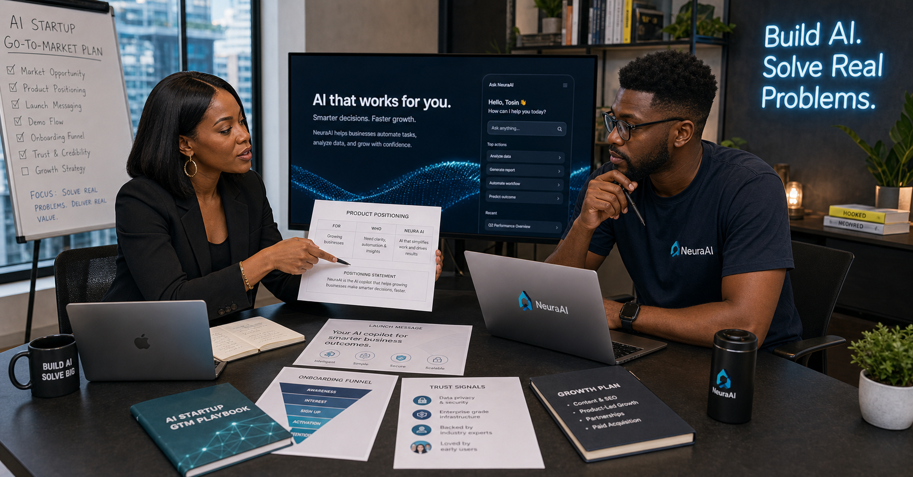

AI product positioning
Sharper use-case framing, audience fit, category language, and message clarity so the product sounds useful instead of vaguely futuristic.
Marketing for AI startups
WTB helps AI startups shape product positioning, launch messaging, onboarding logic, demand generation, trust signals, and growth systems so the product feels easier to understand, try, and adopt.
A marketing agency for AI startups should help your business explain the product better, reduce skepticism faster, shape demand generation more intelligently, and turn AI curiosity into trust, demos, trials, users, or revenue.
What AI startups often face
AI startups often launch into a market already crowded with claims, hype, and “AI-powered” sameness. Buyers usually need clearer proof of what the product really does, who it is for, what task it improves, and why it deserves attention now.
WTB helps AI startups connect product positioning, launch content, onboarding messaging, use-case framing, paid traffic, and conversion structure into one system that feels more believable and more commercially useful.
If your product is still in the broader startup stage, review our Startup Marketing Agency Nigeria page too.

What we handle
Whether your business is launching an AI copilot, workflow tool, AI agent, or AI-enabled SaaS, the goal is not just visibility. It is understanding, trust, and action.
Sharper use-case framing, audience fit, category language, and message clarity so the product sounds useful instead of vaguely futuristic.
Trust signals, onboarding support, credibility framing, and content that reduces “is this real?” hesitation faster.
Launch sequence, demo flow support, landing pages, product education, and channel logic for AI products that need cleaner adoption paths.
Google Ads, social traffic, founder-led content, and campaign support for getting the product in front of the right people sooner.
Explainer content, onboarding content, use-case content, FAQs, and messaging that help buyers understand what the AI actually does.
Message testing, conversion friction review, and cleaner decisions about what the AI startup should double down on next.
Best fit
This page is a strong fit for AI startups, agentic AI products, AI workflow tools, copilots, B2B AI platforms, AI-enabled SaaS, and founders building products that need trust before scale.
If your AI product is app-led, also review our App Marketing Agency Nigeria page. If your business is more market-entry focused, our Go-To-Market Strategy Nigeria page helps frame that wider launch path.

Quick answers
A marketing agency for AI startups should help with positioning, trust signals, onboarding messaging, launch strategy, product education, content, demand generation, and growth support.
AI startups usually need to explain unfamiliar products, reduce skepticism, prove usefulness quickly, and turn curiosity into trust, trials, demos, or adoption.
This page is best for AI founders, agentic AI teams, SaaS startups, AI tools, workflow products, copilots, and AI-enabled businesses that need smarter go-to-market support.
Launching an AI product?
We can help your business shape the launch story, reduce buyer hesitation, and build a better path from product interest to adoption.
Latest marketing reads
New and useful reads for Nigerian brands planning SEO, ads, AI search visibility, WhatsApp follow-up, and smarter marketing budgets.